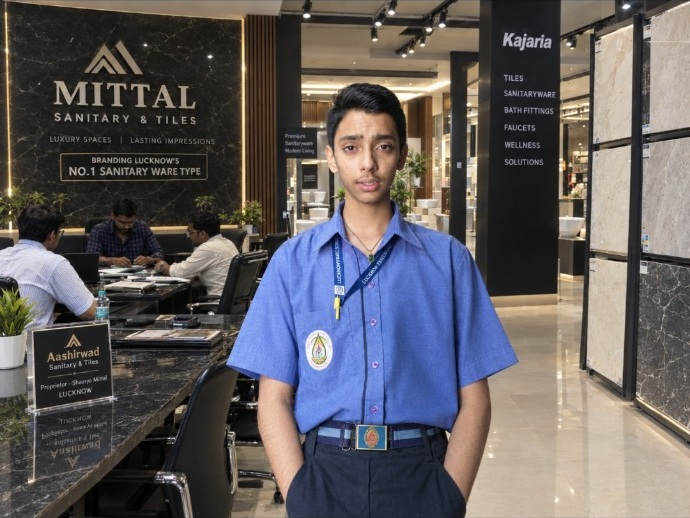

01 / The spark
Curiosity
Finding the joy of making digital things and asking what a website or interface could become.
Student developer · AI-assisted digital creator
Creating since Class 8 · The journey is just beginning
15 YEARS OLD. CLASS 10.
Creating since Class 8. Building digital worlds through curiosity, experimentation, visual craft and AI-assisted workflows. Every project is another step in learning how thoughtful digital experiences should look, feel and work.

Three different directions: a brand world, a tool built around precision, and a portfolio experiment shaped by space and interaction. These are selected entry points—not a ranking.
Brand worlds, interactive interfaces, tools, memorial storytelling and business-oriented websites—collected in one place, with honest notes about what is verified and what still needs checking.
Every moving preview below is an original, lightweight motion-art study created for this portfolio. It is not presented as a screen recording of the live project.
“15 years old. Class 10. Creating since Class 8. The journey is just beginning.”
I learn by making things: testing an idea, shaping an interface, using AI as a development aid, finding what breaks, and improving the next version. This archive is a record of that process—not a claim to have mastered everything, but evidence of curiosity put into practice.
Projects are a way to explore web interfaces, useful tools, atmosphere, storytelling and the details that make a digital experience feel considered.
Some entries are concepts, some are experiments, and some are business-facing websites. Their status is labelled honestly so the work can speak for itself.
A truthful outline of the journey so far. No invented launch dates or milestones—just the stages you have shared.
Finding the joy of making digital things and asking what a website or interface could become.
Creating independent projects, trying new visual directions and learning through experimentation.
Using AI-assisted workflows, feedback and repeated adjustments to make interfaces more coherent and useful.
Continuing to learn responsive design, JavaScript, publishing workflows and practical product thinking.
A learning map, not a proficiency scoreboard. These are areas used or explored through the projects; no artificial percentage ratings.
Page structure, layouts, typography and responsive visual systems.
Adding state, search, interface controls and browser-based interactions.
Using AI tools to explore ideas, draft implementations and iterate.
Writing detailed briefs that communicate goals, constraints and art direction.
Organising content, flows, states and clear actions around a specific idea.
Adapting layouts and interactions for mobile, tablet and desktop use.
Organising repositories and publishing static websites on the web.
Trying ideas across calculators, simulators, portfolios and storytelling.
The labels above describe practical exposure and a learning process, not a claim of professional mastery. Project-specific status notes appear in the archive.
For project discussions, creative collaborations, feedback, or enquiries about my work, connect with me through my public profiles or email.